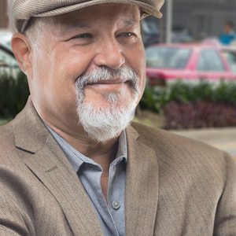
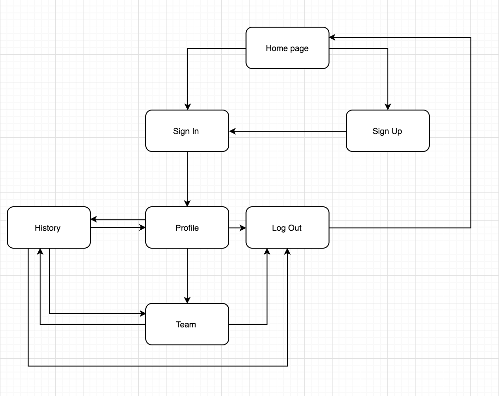
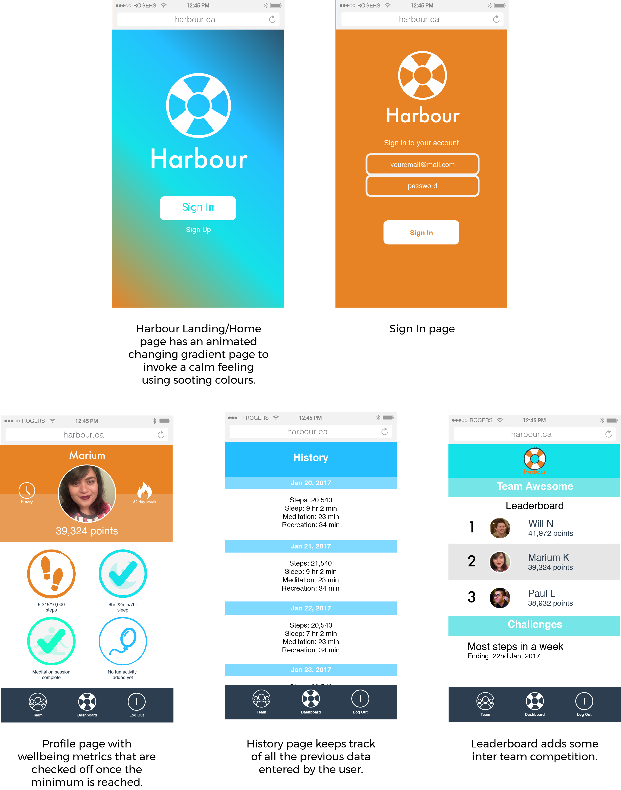

I am an energetic and driven project manager and entrepreneur located in Kitchener-Waterloo.
I have a BSc. in Health Studies (Health Informatics) from the University of Waterloo and I love to solve problems.
I approach every health, technology, and real-life challenge from a diverse perspective, honed from years of varied experiences.
If you want to make an impact in the world, I would love to connect with you!
Learn more about me below or check out my resume!
StarterHacks
Co-founder + Co-lead
StarterHacks is a beginner focused hackathon that is working to diversify the tech industry. I founded the initiative and am responsible for team management and strategizing the scope and future for the event. In 2017, I also oversaw the event creation and marketing.
Harbour
UX/UI Designer + Pitcher
Harbour is a project created to gamify well being for corporations to help form better self care habits and increase employee retention. It was created at UofTHacksIV, and placed top ten as well as winning the Deloitte Best Pitch prize.

Clearspider Redesign
UX/UI Designer + Researcher
Clearspider is a market leader in cloud-based inventory management softwares and held a 24 hour design challenge to build a better user experience. I redesigned the user interface and my team and I placed 4th.
Where's Marium Today?
Reach Out to Me!
Let's make a difference together.
StarterHacks
Overview
| Purpose: Create a more diverse and beginner-friendly hackathon | Tools Used: Trello, Slack, MailChimp, Typeform, Gantt Charts, Adobe Illustrator |
| Roles: Co-founder, Co-lead | Team: Marium Kirmani, William Nippard, Ben Che, Jessica Tam, Chirag Gada, Daniel Samyn |
Creation
Throughout my university career I had been to over 20 hackathons, and each time the environment and process was similar. You went in, there was an opening ceremony, and then you were told to create something, anything. As someone who never had any coding background going to my first hackathon was a haunting, intimidating experience. I felt a strong sense of an imposter syndrome, and never felt like I could approach someone with my skill set which was heavily focused on design and business. When I talked to other frequent hackers not from a technical background, I realized that it was not only a me problem.I decided to talk to students and figure out why the hackathon culture was so persistent and how it could be changed. I found that many students wanted to attend hackathons but felt too intimidated. Their top concerns were:
-
They felt they were not good enough to contribute in a team
They did not know where to begin to improve their skills
They felt hackathons are only for those who can code
They felt that since they were not in a technical program they were not included
There was not enough support for beginners at hackathons
We then decided to create a hackathon that focused on a solution to these problems, and so StarterHacks was created. Prior to StarterHacks, we had a live document that we used to track all the good and bad things we witnessed at a hackathon. This helped us really hone in on what could be improved and what could be implemented into StarterHacks.
Value Proposition
Our value proposition was simple, we were beginner friendly and we ensured that everyone felt welcomed. To do this we created three categories that hackers could identify themselves in, design, development, and business. Around these three categories we created three workshop streams that took place prior to when hacking began. By holding workshops before hacking, participants did not have to figure out which to prioritize, learning or building. This structure helped our participants to learn their skills before they implemented them ensuring that they understood the importance of different roles in a team and that they were all on a similar footing for when hacking started.We also showcased diversity of talent through our prize categories. Instead of the traditional top 3, we went for Most Promising, Best Design, Best Pitch, Best Technology, and Mentor’s Choice. This holistic approach helped us not only give out more prizes but acknowledge that the tech industry is more than just coding.
Brand Creation & Marketing
Our brand and logo was designed to keep in mind the welcoming approach. We used a welcoming colour palette and our simple logo was made to be memorable. The logo was a combination of light bulb, an almost universal sign for ideas, and a start icon, to signify us giving hackers a start. In a similar vein, all our copy was written to invoke a warm feeling of welcome, maintaining a casual tone as well as a professional demeanour.To market StarterHacks, we tried to engage as many channels as we could. Our team consisted of all Residence Life Dons, resident advisors for first year students, and so we ensured all students that lived at the University of Waterloo residences knew about StarterHacks by requesting that all dons share the event to their floors. We also used our connections with sponsors to advertise on their twitter pages and websites. Furthermore, we were also listed as a Major League Hacking member event which helped us gain a large audience also. Our main source of traction and marketing was Facebook. We utilised any and all Facebook groups we could think of including but not limited to Frosh Groups, GBDA (Global Business and Digital Arts) Student Group, etc. We also implemented paid Facebook ads targeting students 16-28 in Waterloo, Kitchener, London, and Greater Toronto Area.
Fundraising
Our two sources of funds were sponsors and student societies. To get sponsors we reached out to people through our personal networks of professors and co-op connections. I designed and wrote the sponsorship package which ended up getting us enough money to cover our budget. We also reached out to students societies and endowment funds to help us along.

Event
The event was held on March 11-12, 2017 at the University of Waterloo. Our strength laid in our schedule structure that followed the steps of learn, implement, pitch; where students first attended the workshops, then hacked and then pitched their products/ideas to our judges. Our workshop speakers included Deloitte Digital Partner Jody McDermott, HealthIM CEO Daniel Pearson Hirdes and CTO Daniel Mackenzie, and Accelerator Centre’s Chase Denomme. As for our judges, they were all workshop speakers with the addition of Wayne Chang and Emily Peat from Conrad.Outcome
Rozelabs
Overview
| Purpose: Create a more diverse and beginner-friendly hackathon | Tools Used: Trello, Slack, MailChimp, Typeform, Gantt Charts, Adobe Illustrator |
| Roles: Co-founder, Co-leadPurpose: Create a more diverse and beginner-friendly hackathon | Team: Marium Kirmani, William Nippard, Ben Che, Jessica Tam, Chirag Gada, Daniel Samyn |
Creation
Throughout my university career I had been to over 20 hackathons, and each time the environment and process was similar. You went in, there was an opening ceremony, and then you were told to create something, anything. As someone who never had any coding background going to my first hackathon was a haunting, intimidating experience. I felt a strong sense of an imposter syndrome, and never felt like I could approach someone with my skill set which was heavily focused on design and business. When I talked to other frequent hackers not from a technical background, I realized that it was not only a me problem.I decided to talk to students and figure out why the hackathon culture was so persistent and how it could be changed. I found that many students wanted to attend hackathons but felt too intimidated. Their top concerns were:
-
They felt they were not good enough to contribute in a team
They did not know where to begin to improve their skills
They felt hackathons are only for those who can code
They felt that since they were not in a technical program they were not included
There was not enough support for beginners at hackathons
We then decided to create a hackathon that focused on a solution to these problems, and so StarterHacks was created. Prior to StarterHacks, we had a live document that we used to track all the good and bad things we witnessed at a hackathon. This helped us really hone in on what could be improved and what could be implemented into StarterHacks.
Value Proposition
Our value proposition was simple, we were beginner friendly and we ensured that everyone felt welcomed. To do this we created three categories that hackers could identify themselves in, design, development, and business. Around these three categories we created three workshop streams that took place prior to when hacking began. By holding workshops before hacking, participants did not have to figure out which to prioritize, learning or building. This structure helped our participants to learn their skills before they implemented them ensuring that they understood the importance of different roles in a team and that they were all on a similar footing for when hacking started.We also showcased diversity of talent through our prize categories. Instead of the traditional top 3, we went for Most Promising, Best Design, Best Pitch, Best Technology, and Mentor’s Choice. This holistic approach helped us not only give out more prizes but acknowledge that the tech industry is more than just coding.
Brand Creation & Marketing
Our brand and logo was designed to keep in mind the welcoming approach. We used a welcoming colour palette and our simple logo was made to be memorable. The logo was a combination of light bulb, an almost universal sign for ideas, and a start icon, to signify us giving hackers a start. In a similar vein, all our copy was written to invoke a warm feeling of welcome, maintaining a casual tone as well as a professional demeanour.To market StarterHacks, we tried to engage as many channels as we could. Our team consisted of all Residence Life Dons, resident advisors for first year students, and so we ensured all students that lived at the University of Waterloo residences knew about StarterHacks by requesting that all dons share the event to their floors. We also used our connections with sponsors to advertise on their twitter pages and websites. Furthermore, we were also listed as a Major League Hacking member event which helped us gain a large audience also. Our main source of traction and marketing was Facebook. We utilised any and all Facebook groups we could think of including but not limited to Frosh Groups, GBDA (Global Business and Digital Arts) Student Group, etc. We also implemented paid Facebook ads targeting students 16-28 in Waterloo, Kitchener, London, and Greater Toronto Area.
Event
The event was held on March 11-12, 2017 at the University of Waterloo. Our strength laid in our schedule structure that followed the steps of learn, implement, pitch; where students first attended the workshops, then hacked and then pitched their products/ideas to our judges. Our workshop speakers included Deloitte Digital Partner Jody McDermott, HealthIM CEO Daniel Pearson Hirdes and CTO Daniel Mackenzie, and Accelerator Centre’s Chase Denomme. As for our judges, they were all workshop speakers with the addition of Wayne Chang and Emily Peat from Conrad.Outcome
Our final numbers wowed us all and we had a very successful event. We were able to achieve our goals of diversity and beginners, as well as surpassing our initial goal of mentors. We were also fully funded by our sponsors and received many in kind perks from our partners. We were successful in building a community, a community we hope to work with in the many years to come.Harbour
Overview
| Purpose: Create a self-care app that will increase employee wellness | Tools Used: Adobe Illustrator |
| Roles: UX/UI Designer, User Research, Pitcher | Team: Marium Kirmani, William Nippard, Paul Li |

Research
We wanted to build something that we could get immediate user feedback for so we had two options, build something aimed towards students or aimed towards one of the many corporate sponsors present. Since many of the students were busy, we decided to go for the corporations as they were always willing to talk to the participants. Our idea first began when we noticed that Deloitte was having a Fitbit step challenge. When we questioned why, they responded that it was an approach to build team spirit and morale around the office. We then decided to do further research about how a challenge of this sort could be expanded and made more effective. When I talked to other frequent hackers not from a technical background, I realized that it was not only a me problem.After talking to many of the employees present there we found out the following advantages and disadvantages of the Fitbit challenge:
| Advantages | Disadvantages |
|---|---|
| Gets everyone in the office to walk | Can be demotivating to see someone do extremely well |
| Promotes healthy competition | Focuses on only steps to promote wellness |
| Promotes teamwork and out of office socialization based around walking | Adds unneeded stress if you are the worst one in your team |
One of the biggest things that stood out to us was that even though the challenge was described as a wellness challenge there was one problem; it only took into account one measure of wellness and that was physical.
According to the World Health Organization, wellbeing is “a state of complete physical, mental, and social well-being, and not merely the absence of disease or infirmity” and to measure just the physical aspect would be remiss. This led to research about wellness metrics, specifically metrics for self-care. If corporations wanted their employees to perform better self-care was a must. This was proven through many peer-reviewed journal articles (1, 2, 3, 4).
We then decided to figure out what would be the different measure of self care that could be easily measured. After reading a few journal articles related to the topic, and with ongoing talks with our target users that were present at the hackathon, we came up with the following top metrics:
-
Exercise
Regular sleep
Healthy eating
Mindful meditation
Scheduled recreational time
Unplugging
Massages
Dancing
Ideation
We wanted to build a product that would use the same concept of the Fitbit challenge but in a more holistic way focused towards self-care. We started with creating two personas, a primary persona, one of the direct user of the app i.e. the employee, and the secondary persona, one of the employer, who implements the challenge.Personas
Primary User
| Name: Sarah | Needs | Pains | Goals |
|---|---|---|---|
| Age: 29 |
|
|
|
| Occupation: Consultant at a large firm | |||
| Location: Toronto, ON | |||
| Marital Status: Single | |||
| Lifestyle: Sedentary |
Secondary User
|  Name: George | Needs | Pains | Goals |
|---|---|---|---|
| Age: 57 |
|
|
|
| Occupation: Managing Partner at a Law Firm | |||
| Location: Toronto, ON | |||
| Marital Status: Married with 3 children | |||
| Lifestyle: Very Active |
App Requirements
Since there were only 48 hours to create the app, we decided to focus on four of the most wanted features. We determined these features through our user research, and they were exercise, mindful meditation, recreational time, and sleep. We also determined the following requirements for our MVP (most viable product).-
The dashboard must have the following information:
-
Name of the user
Icons to indicate each of the four self-care habits
A way to look at the past week/month/year progress
A way to look at your team’s current score/progress
Workflow
Since the app was made for a hackathon the workflow was kept very minimal and intiuitive. Upon expansion, this workflow is anticipated to get more complicated.
Wireframes
The first aspect of creating the product was understanding what each screen was going to be. Due to lack of time, many low-fidelity wireframes, usually a very important part of my UX/UI design process, were foregone to jump straight to digital wireframes.
Outcome
The MVP was created using HTML5+CSS and Javascript as well as Ruby on Rails for backend by the team. The app was pitched with this slide deck and was awarded the Deloitte Best Pitch Prize, as well as reaching the top ten hacks.Currently this project is on hold since my team and I are occupied with other projects. However, we do hope to make this project a product that can be used by multiple corporations one day. There are many improvements we can make such as making the app more user friendly
Clearspider Redesign
Overview
| Purpose: Design a more user friendly inventory management system | Tools Used: Adobe Illustrator, InVision |
| Roles: UX/UI Designer | Team: Marium Kirmani, William Nippard, Ben Che |
Research
To fully understand the user problems we first had to look at the current software. However, Clearspider did not provide their current software as they did not want to influence the design of the competitors. Although the intent behind this is understandable, from a research and problem solving point of view, this added to the challenge. In their outline they mentioned that there was a software bloat but never specified where.To fully understand an inventory management system, my team and I researched current solutions, such as IMS, and even Shopify, and found the following problems:
-
Redundancy. Most of the systems had too many options on the page that were similar if not the same as other options, leading to the user being redirected to the same page through different commands
Clutter. The pages were hard to look at it. There was too much information and no importance was given to anything.
Lack of customization. The dashboards had too much information and the user could not change this information to what they needed/wanted.
We then decided to create a hackathon that focused on a solution to these problems, and so StarterHacks was created. Prior to StarterHacks, we had a live document that we used to track all the good and bad things we witnessed at a hackathon. This helped us really hone in on what could be improved and what could be implemented into StarterHacks.
Personas
To further understand the user experience, we mocked up a primary user persona.| Name: Bob | Needs | Pains | Goals |
| Age: 37 |
|
|
|
| Occupation: Warehouse Manager | |||
| Income: $50,000 annually | |||
| Location: Etobicoke, ON | |||
| Marital Status: Married with 1 child | |||
| Tech Experience: Minimal |
Wireframes
The focus of the wireframes was to ensure that the software was intuitive, customizable and had all the necessary information.
Outcome
The project had a lot of time constraints and the challenge is not something that can be accomplished in 24 hours. To fully realize the potential of Clearspider software there needs to extensive user research committed to the project, as well as deep analysis done of how the different users use the product.Tellspec
Overview
| Purpose: Create a more diverse and beginner-friendly hackathon | Tools Used: Trello, Slack, MailChimp, Typeform, Gantt Charts, Adobe Illustrator |
| Roles: Co-founder, Co-leadPurpose: Create a more diverse and beginner-friendly hackathon | Team: Marium Kirmani, William Nippard, Ben Che, Jessica Tam, Chirag Gada, Daniel Samyn |
Creation
Throughout my university career I had been to over 20 hackathons, and each time the environment and process was similar. You went in, there was an opening ceremony, and then you were told to create something, anything. As someone who never had any coding background going to my first hackathon was a haunting, intimidating experience. I felt a strong sense of an imposter syndrome, and never felt like I could approach someone with my skill set which was heavily focused on design and business. When I talked to other frequent hackers not from a technical background, I realized that it was not only a me problem.I decided to talk to students and figure out why the hackathon culture was so persistent and how it could be changed. I found that many students wanted to attend hackathons but felt too intimidated. Their top concerns were:
-
They felt they were not good enough to contribute in a team
They did not know where to begin to improve their skills
They felt hackathons are only for those who can code
They felt that since they were not in a technical program they were not included
There was not enough support for beginners at hackathons
We then decided to create a hackathon that focused on a solution to these problems, and so StarterHacks was created. Prior to StarterHacks, we had a live document that we used to track all the good and bad things we witnessed at a hackathon. This helped us really hone in on what could be improved and what could be implemented into StarterHacks.
Value Proposition
Our value proposition was simple, we were beginner friendly and we ensured that everyone felt welcomed. To do this we created three categories that hackers could identify themselves in, design, development, and business. Around these three categories we created three workshop streams that took place prior to when hacking began. By holding workshops before hacking, participants did not have to figure out which to prioritize, learning or building. This structure helped our participants to learn their skills before they implemented them ensuring that they understood the importance of different roles in a team and that they were all on a similar footing for when hacking started.We also showcased diversity of talent through our prize categories. Instead of the traditional top 3, we went for Most Promising, Best Design, Best Pitch, Best Technology, and Mentor’s Choice. This holistic approach helped us not only give out more prizes but acknowledge that the tech industry is more than just coding.
Brand Creation & Marketing
Our brand and logo was designed to keep in mind the welcoming approach. We used a welcoming colour palette and our simple logo was made to be memorable. The logo was a combination of light bulb, an almost universal sign for ideas, and a start icon, to signify us giving hackers a start. In a similar vein, all our copy was written to invoke a warm feeling of welcome, maintaining a casual tone as well as a professional demeanour.To market StarterHacks, we tried to engage as many channels as we could. Our team consisted of all Residence Life Dons, resident advisors for first year students, and so we ensured all students that lived at the University of Waterloo residences knew about StarterHacks by requesting that all dons share the event to their floors. We also used our connections with sponsors to advertise on their twitter pages and websites. Furthermore, we were also listed as a Major League Hacking member event which helped us gain a large audience also. Our main source of traction and marketing was Facebook. We utilised any and all Facebook groups we could think of including but not limited to Frosh Groups, GBDA (Global Business and Digital Arts) Student Group, etc. We also implemented paid Facebook ads targeting students 16-28 in Waterloo, Kitchener, London, and Greater Toronto Area.
Event
The event was held on March 11-12, 2017 at the University of Waterloo. Our strength laid in our schedule structure that followed the steps of learn, implement, pitch; where students first attended the workshops, then hacked and then pitched their products/ideas to our judges. Our workshop speakers included Deloitte Digital Partner Jody McDermott, HealthIM CEO Daniel Pearson Hirdes and CTO Daniel Mackenzie, and Accelerator Centre’s Chase Denomme. As for our judges, they were all workshop speakers with the addition of Wayne Chang and Emily Peat from Conrad.Outcome
Our final numbers wowed us all and we had a very successful event. We were able to achieve our goals of diversity and beginners, as well as surpassing our initial goal of mentors. We were also fully funded by our sponsors and received many in kind perks from our partners. We were successful in building a community, a community we hope to work with in the many years to come.Residence Life Don
Overview
| Purpose: Create a more diverse and beginner-friendly hackathon | Tools Used: Trello, Slack, MailChimp, Typeform, Gantt Charts, Adobe Illustrator |
| Roles: Co-founder, Co-leadPurpose: Create a more diverse and beginner-friendly hackathon | Team: Marium Kirmani, William Nippard, Ben Che, Jessica Tam, Chirag Gada, Daniel Samyn |
Creation
Throughout my university career I had been to over 20 hackathons, and each time the environment and process was similar. You went in, there was an opening ceremony, and then you were told to create something, anything. As someone who never had any coding background going to my first hackathon was a haunting, intimidating experience. I felt a strong sense of an imposter syndrome, and never felt like I could approach someone with my skill set which was heavily focused on design and business. When I talked to other frequent hackers not from a technical background, I realized that it was not only a me problem.I decided to talk to students and figure out why the hackathon culture was so persistent and how it could be changed. I found that many students wanted to attend hackathons but felt too intimidated. Their top concerns were:
-
They felt they were not good enough to contribute in a team
They did not know where to begin to improve their skills
They felt hackathons are only for those who can code
They felt that since they were not in a technical program they were not included
There was not enough support for beginners at hackathons
We then decided to create a hackathon that focused on a solution to these problems, and so StarterHacks was created. Prior to StarterHacks, we had a live document that we used to track all the good and bad things we witnessed at a hackathon. This helped us really hone in on what could be improved and what could be implemented into StarterHacks.
Value Proposition
Our value proposition was simple, we were beginner friendly and we ensured that everyone felt welcomed. To do this we created three categories that hackers could identify themselves in, design, development, and business. Around these three categories we created three workshop streams that took place prior to when hacking began. By holding workshops before hacking, participants did not have to figure out which to prioritize, learning or building. This structure helped our participants to learn their skills before they implemented them ensuring that they understood the importance of different roles in a team and that they were all on a similar footing for when hacking started.We also showcased diversity of talent through our prize categories. Instead of the traditional top 3, we went for Most Promising, Best Design, Best Pitch, Best Technology, and Mentor’s Choice. This holistic approach helped us not only give out more prizes but acknowledge that the tech industry is more than just coding.
Brand Creation & Marketing
Our brand and logo was designed to keep in mind the welcoming approach. We used a welcoming colour palette and our simple logo was made to be memorable. The logo was a combination of light bulb, an almost universal sign for ideas, and a start icon, to signify us giving hackers a start. In a similar vein, all our copy was written to invoke a warm feeling of welcome, maintaining a casual tone as well as a professional demeanour.To market StarterHacks, we tried to engage as many channels as we could. Our team consisted of all Residence Life Dons, resident advisors for first year students, and so we ensured all students that lived at the University of Waterloo residences knew about StarterHacks by requesting that all dons share the event to their floors. We also used our connections with sponsors to advertise on their twitter pages and websites. Furthermore, we were also listed as a Major League Hacking member event which helped us gain a large audience also. Our main source of traction and marketing was Facebook. We utilised any and all Facebook groups we could think of including but not limited to Frosh Groups, GBDA (Global Business and Digital Arts) Student Group, etc. We also implemented paid Facebook ads targeting students 16-28 in Waterloo, Kitchener, London, and Greater Toronto Area.